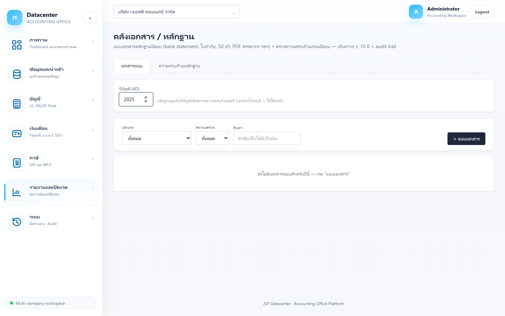
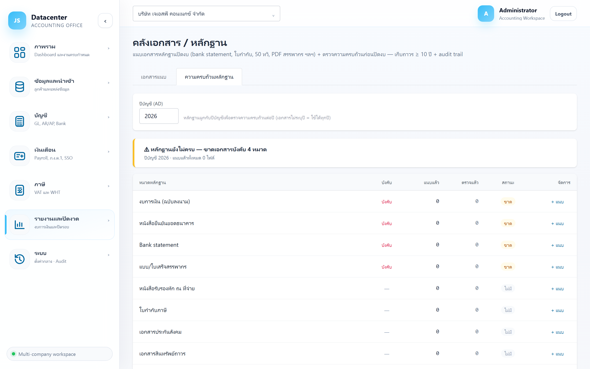

คู่มือการใช้งาน › รายงานและปิดงวด › คลังเอกสาร / หลักฐาน
คลังเอกสาร / หลักฐาน
ที่เก็บเอกสารหลักฐานของแต่ละปีบัญชี พร้อม เช็กลิสต์ความครบถ้วน — ทำให้ตอนผู้สอบบัญชีหรือสรรพากรขอเอกสาร หยิบได้ทันทีโดยไม่ต้องรื้อแฟ้ม
ทำไมต้องเก็บในระบบ
กฎหมายกำหนดให้เก็บเอกสารทางบัญชี อย่างน้อย 5 ปี (บางกรณีถึง 10 ปี) — เก็บไว้ในระบบพร้อมผูกกับปีบัญชี ทำให้ตรวจย้อนหลังได้จริงและไม่สูญหาย
1. การเข้าใช้งาน
- เลือกบริษัทลูกค้า ที่แถบด้านบน
- เปิดเมนู รายงานและปิดงวด → คลังเอกสาร / หลักฐาน
- ตั้ง ปีบัญชี (ค.ศ.) แล้วเลือกแท็บ
| แท็บ | ใช้ทำอะไร |
|---|---|
| เอกสารแนบ | ค้นหา ดู และดาวน์โหลดเอกสารที่แนบไว้ทั้งหมด |
| ความครบถ้วนหลักฐาน | เช็กลิสต์ว่าหมวดหลักฐานที่จำเป็นมีครบและตรวจแล้วหรือยัง |
2. แท็บ “เอกสารแนบ”

| ตัวกรอง | ค่าที่เลือกได้ |
|---|---|
| ประเภท | ทั้งหมด หรือเลือกหมวดเอกสาร (ดูตารางด้านล่าง) |
| สถานะตรวจ | ทั้งหมด · รอตรวจ · ตรวจแล้ว · ไม่ผ่าน |
| ค้นหา | ค้นจากชื่อเอกสาร/คำอธิบาย |
| คอลัมน์ | ความหมาย |
|---|---|
| เอกสาร | ชื่อไฟล์และคำอธิบาย |
| ประเภท | หมวดที่จัดไว้ตอนแนบ |
| วันที่ | วันที่ของเอกสาร (ไม่ใช่วันที่อัปโหลด) |
| ขนาด | ขนาดไฟล์ |
| สถานะ | รอตรวจ · ตรวจแล้ว · ไม่ผ่าน |
| ดาวน์โหลด | เปิด/บันทึกไฟล์ |
หมวดเอกสารที่ระบบรองรับ
| หมวด | ตัวอย่าง |
|---|---|
| Bank statement | รายการเดินบัญชีจากธนาคาร |
| หนังสือยืนยันยอดธนาคาร | หนังสือยืนยันยอด ณ วันสิ้นงวดจากธนาคาร |
| ใบกำกับภาษี | ใบกำกับภาษีซื้อ/ขาย |
| หนังสือรับรองหัก ณ ที่จ่าย | 50 ทวิ ที่ได้รับและที่ออกให้ |
| แบบ/ใบเสร็จสรรพากร | ภ.พ.30, ภ.ง.ด.1/3/53/50 และใบเสร็จรับชำระ |
| เอกสารประกันสังคม | สปส.1-10, กท.20ก และใบเสร็จ |
| เอกสารสินทรัพย์ถาวร | ใบเสร็จซื้อสินทรัพย์ เอกสารจำหน่าย |
| เอกสารค่าใช้จ่ายจ่ายล่วงหน้า | กรมธรรม์ประกัน สัญญาบริการรายปี |
| สัญญาเช่าซื้อ/เงินกู้ | สัญญาและตารางผ่อนชำระ |
| งบการเงิน | งบที่ยื่นและรายงานผู้สอบบัญชี |
| ไฟล์นำเข้า Express | สำเนาไฟล์ต้นทางที่ระบบเก็บให้อัตโนมัติตอนนำเข้า |
| อื่น ๆ | เอกสารที่ไม่เข้าหมวดใด |
แนบเอกสาร
| ช่อง | คำอธิบาย |
|---|---|
| วันที่เอกสาร | วันที่บนตัวเอกสาร ใช้เรียงและค้นหา |
| หัวข้อ/คำอธิบาย | อธิบายให้คนอื่นเข้าใจว่าเอกสารนี้คืออะไร |
| เลขที่อ้างอิง | เลขที่เอกสาร/ใบเสร็จ |
| หมายเหตุ | บันทึกเพิ่มเติม |
| แนบเป็นหลักฐานปีบัญชี | ปีที่เอกสารนี้ผูกอยู่ — ตั้งให้ถูก ไม่งั้นหาไม่เจอตอนตรวจย้อนหลัง |
ไฟล์นำเข้า Express เก็บให้อัตโนมัติ
ทุกครั้งที่นำเข้าข้อมูล ระบบเก็บสำเนาไฟล์ต้นทางไว้เป็นหลักฐานให้เอง — ดูได้จากปุ่ม “หลักฐาน” ที่ เมนูนำเข้าข้อมูล ด้วย
3. แท็บ “ความครบถ้วนหลักฐาน”

| คอลัมน์ | ความหมาย |
|---|---|
| หมวดหลักฐาน | หมวดเอกสารที่ควรมีสำหรับปีบัญชีนั้น |
| บังคับ | หมวดที่ต้องมีก่อนถือว่าปิดงบครบ |
| แนบแล้ว | จำนวนไฟล์ที่แนบไว้ในหมวดนั้น |
| ตรวจแล้ว | จำนวนไฟล์ที่ผ่านการตรวจสอบ |
| สถานะ | มีแล้ว หรือ ไม่มี |
ใช้เช็กลิสต์ก่อนปิดปี
ไล่ให้หมวดที่ขึ้น บังคับ เป็น มีแล้ว ครบทุกหมวด ก่อนไป ล็อกงวดถาวร — เพราะหลังล็อกแล้วการรวบรวมเอกสารย้อนหลังทำได้ยากกว่ามาก
4. ปัญหาที่พบบ่อย
| อาการ | สาเหตุและวิธีแก้ |
|---|---|
| แนบแล้วแต่หาไม่เจอ | ตั้งปีบัญชีตอนแนบผิด — เปลี่ยนปีที่ช่องด้านบนเพื่อค้นหา แล้วแก้ปีของเอกสารให้ถูก |
| เช็กลิสต์ยังขึ้น “ไม่มี” ทั้งที่แนบแล้ว | แนบไว้คนละหมวดหรือคนละปี — ตรวจคอลัมน์ประเภทของเอกสารนั้น |
| เอกสารขึ้นสถานะ “ไม่ผ่าน” | ผู้ตรวจตีกลับ เช่น ภาพไม่ชัดหรือไม่ครบหน้า — แนบไฟล์ใหม่ทับ |
| ไม่รู้ว่าต้องเก็บอะไรบ้าง | ใช้แท็บความครบถ้วนหลักฐานเป็นตัวตั้ง — หมวดที่ระบบขึ้นว่าบังคับคือชุดขั้นต่ำ |
ถัดไป
ตรวจสอบว่าใครทำอะไรกับข้อมูลได้ที่ ประวัติการใช้งาน